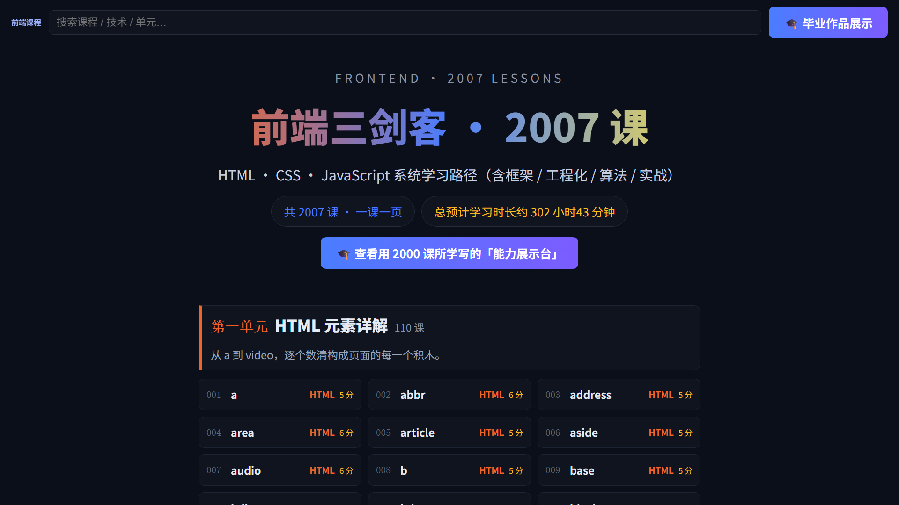
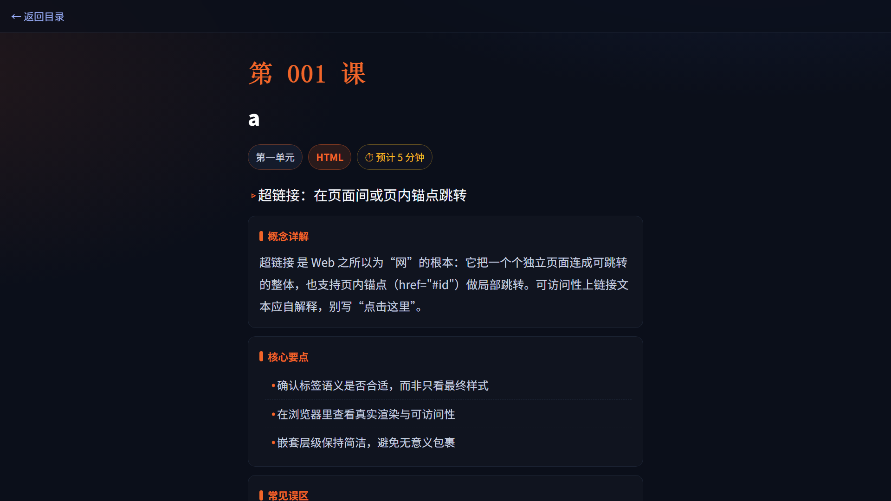

Course2000 前端课程
2007 课，一课一页学
前端三剑客（HTML / CSS / JavaScript）系统课：94 单元、302 课时，离线桌面 app 一键开课，配套 PPTX 课件。课程数据全部在本机，断网也能学。
界面示意 · 桌面 exe 实际运行
一套课程，三种交付
从写完第一行 HTML 到做出毕业作品，所有内容都在一个离线包里完成。
2007 课系统课
94 单元、302 课时，按学习路线编排：先三剑客基础，再进阶与工程化，最后项目实战与求职收官。
离线桌面课堂
C# + WebView2 单文件 exe（816 KB），把静态课程站装进原生窗口，file:/// 加载、零网络请求。
八段式学练
每课固定按「概念 / 要点 / 易错 / 代码 / 演示 / 练习 / 小结 / 导航」展开，学练一体，不迷路。
PPTX 教师课件
2007 课全部配有 16:9 课件，每页备注写有讲稿；「总目录」一页直达每一课，放映即提词。
检索与作品台
课程站带全局检索框，「能力展示台」页集中展示毕业作品，学完即可产出、可回看。
纯静态课程站
课程是纯静态 HTML，浏览器直接打开 course2000/index.html 即可，无需 exe、不挑系统。
py 课程生成器
课程页由纯 Python 3 标准库脚本生成，源码随站开放，改 UNITS 数据即可产出自己的课程。
能力展示台
毕业作品页 showcase.html：把学过的组件拼成可交互作品，作为求职与自学的成果集。
两种学习方式，都支持
Windows 用桌面 exe 开箱即用；macOS / Linux 用浏览器或 py 源码版，体验一致。
桌面 exe 离线学 Windows 推荐
下载 Course2000-Windows.zip，解压后双击 Course2000.exe 即用：原生窗口、启动加速、右键菜单与快捷键一应俱全，全程不联网。
浏览器 / py 跨平台 macOS · Linux
不装 exe 也能学：解压后直接用任意现代浏览器打开 course2000/index.html；或用 python3 gen_course.py 生成课程页本地学习。
课程站本身不记录个人进度，换电脑/换文件夹把整个目录拷过去即可；exe 会在程序目录生成 cache/ 缓存目录，删除它不影响课程内容，只是首次加载略慢。
三步开始开课
解压 zip
右键 → 全部解压。保证 Course2000.exe 与 course2000/ 文件夹在同一目录——程序按相对位置加载课程。
确认 WebView2 Runtime
Windows 10/11 普遍已随 Edge 安装。若启动报「WebView2 内核初始化失败」，装一次 Evergreen Runtime 即可。
双击 Course2000.exe
首次启动稍慢（初始化缓存），之后明显提速。想换位置，连文件夹一起移动即可，无注册表残留。
课程实机截图
以下截图取自真实运行环境，未做任何修饰。


常见问题
启动提示「WebView2 内核初始化失败」怎么办？
build/error.log。不装 exe，能直接看课程吗？
course2000/index.html 即可，功能与 exe 内一致（exe 只是提供了原生窗口与启动优化）。macOS / Linux 怎么用？
course2000/index.html；② 下载 gen_course.py，在本机 python3 gen_course.py 生成课程页并学习（需 Python 3.8+，无需第三方库）。详见「使用说明」。换电脑 / 换文件夹，学习进度会丢吗？
cache/ 缓存目录，删除它不影响课程内容，只是首次加载略慢。PPTX 课件在哪里？
Course2000-Windows.zip 内的 Course2000-PPTX课件-2007课/ 文件夹：2007 课一课一个文件，另有带 2007 条超链接的「总目录」和检索页；用 PowerPoint / WPS 打开即可（先完整解压 zip，勿在压缩包内双击）。zip 校验值怎么用？
Get-FileHash Course2000-Windows.zip -Algorithm MD5，与页面值比对一致即说明文件完整未被篡改。现在下载，下次写页面直接开课
三个平台按需选择：Windows 开箱即用，macOS / Linux 用 py 或浏览器。
Windows 没装 WebView2？到微软官网下载「WebView2 Evergreen Standalone Installer」装一次即可
macOS / Linux 为同一 py 源码（Python 3 + 标准库，无第三方依赖），配置步骤见使用说明
校验值 · zip c1f20695…3392a（复制）
｜ py 3a0b8362…6a88（复制）